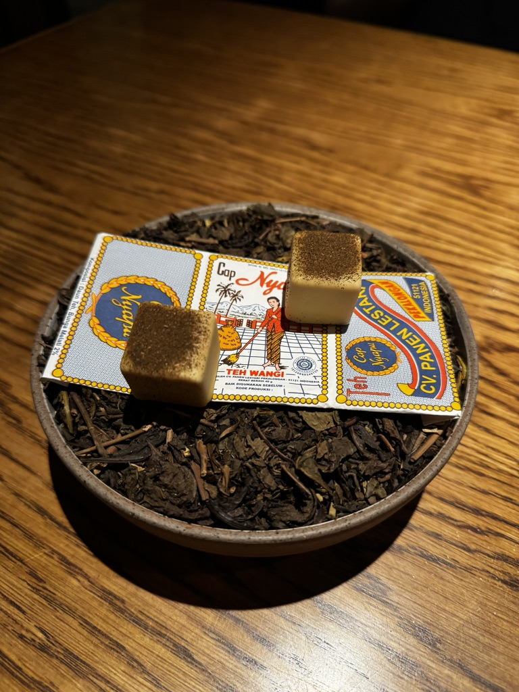
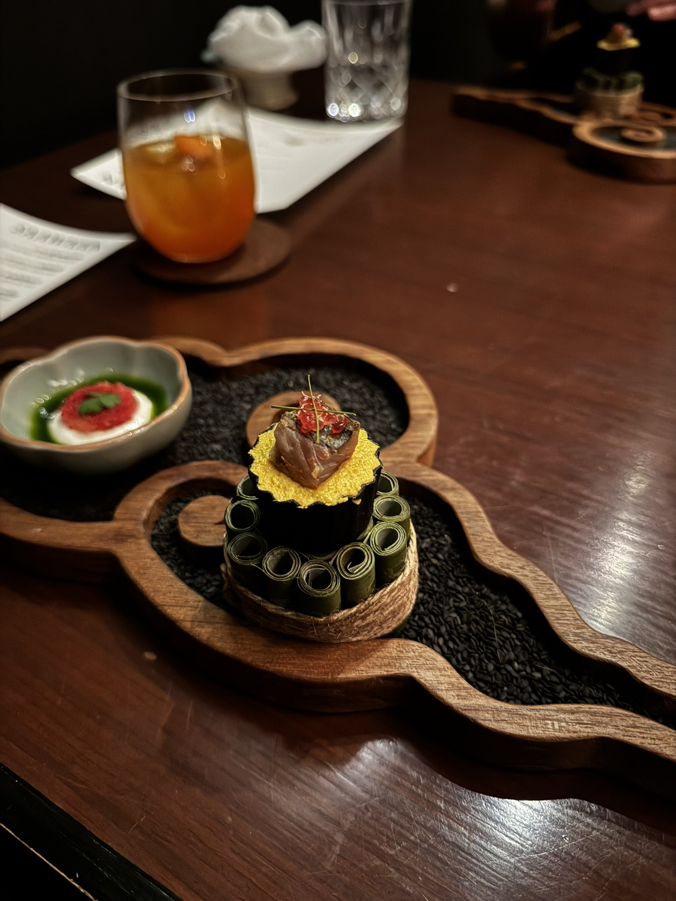

Food notes
Every meal, scored the same way.
Jakarta reviews every few weeks, plus the meals worth writing about from each trip. Full reviews carry a Signature Meter; shorter notes just tell you whether to bother.
11 notes across 5 places
Newest first
 9.1
9.1
Kindling
Three-room set menu that felt intimate rather than polished. Crab custard was the peak.
Expensive but worth it · birthday dinner
9.1August
Third visit and still no weak dish. Warmer-modern where Kindling is nostalgic.
Worth it · date night
7.2Saawaan
Serious Thai craft and excellent service, but the Raw course was the clear miss.
Beautiful craft, not automatic return
Gyukatsu Motomura
The hot stone lets you finish each bite yourself. Best first meal of the Tokyo leg.
Go · best gyukatsu
CoCo Curry, Shin Umeda
After Osaka Castle: crispy cutlet, warm sauce, easy travel-day comfort.
Fine · easy lunch
Ryunosu yakiniku
Yakiniku near Shinsaibashi — legitly good meat, plus a big udon bowl.
Go · late lunch
Shiroi Koibito soft serve
Delicate and sweet, eaten outside in freezing weather after the biscuit tour.
Go once · sweet stop
Lunch near Hokkaido Jingu
Omurice, fried seafood, salad, hamburger patty — comfort after the shrine.
Fine · shrine day
7-Eleven hotel dinner
After Mt. Moiwa: convenience store snacks, crab-style bites, egg, chicken, dessert.
Do it · hotel night
Salmon & king crab lunch
Restaurant name forgotten, but the salmon sashimi and king crab leg stuck.
Go · seafood
Arrival night ramen
A late 22:30 bowl after landing in Hokkaido. Cramped, cozy, savoury broth.
Go · first nightNothing written in this city yet.
We ate there. It just hasn’t been written up.
Coming next
More Jakarta, and a Malang list.
A new review every few weeks. The monthly letter goes out before anything is polished.